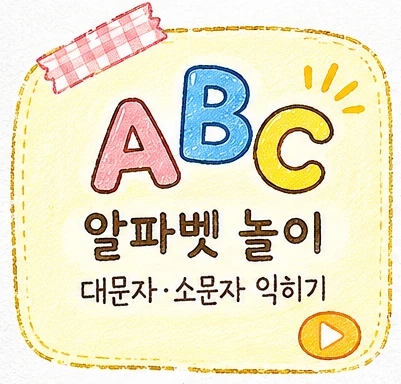
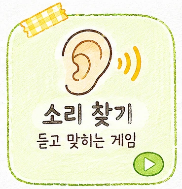

⭐ 호수플레이
HosuPlay
English
영어놀이
🔊
소리
↺
처음
오늘은 어떤 영어놀이를 해볼까? 🌼
1
알파벳
글자와 이름을 익혀요

▶ 시작하기
2
파닉스
알파벳의 소리를 배워요
▶ 시작하기
3
소리 합치기
소리를 이어 단어를 만들어요
▶ 시작하기
4
단어 읽기
파닉스로 단어를 읽어요

▶ 시작하기
5
듣고 맞히기
소리를 듣고 단어를 찾아요
🎧
▶ 시작하기
🐕 동물 행동 놀이
동물의 움직임을 듣고 그림을 골라봐!
▶ 체험하기
🌟 나의 학습
0 / 5
← 놀이 고르기
1 / 5
🔊 다시 듣기
다음 문제 →